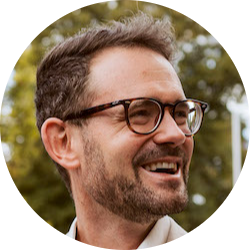

Felix Schönbrodt: Replicability crisis
 Monday 11 September, 10:00-10:45
Prof Felix Schönbrodt, LMU Open Science Center managing director and Prof of Psychology at the LMU, will set the scene and present an overview of the replicability crisis across fields, and an introduction to open research initiatives.
Malika Ihle: Credible research
 Monday 11 September, 11:00-11:45
Monday 11 September, 11:00-11:45
Dr Malika Ihle, LMU Open Science Center coordinator, will give an overview of open research practices and will introduce the workshops of this summer school. She will argue that to make one’s research the most credible and the most likely to replicate, one can engage with preregistration, to increase the reliability of the research, and with a finite set of computing tools, to increase the reproducibility of their workflow.
Uli Dirnagl: Reducing waste and increasing value of biomedical research
 Tuesday 12 September, 9:00-9:45
Tuesday 12 September, 9:00-9:45
Recent advances in biomedical research provide innumerable opportunities to develop novel preventive and therapeutic strategies. However, only a small fraction of biomedical discoveries are successfully translated into clinical applications. Potential ‘breakthrough’ therapies, which are spectacularly successful in animal models of disease, often fail in clinical trials. This translational bottleneck imposes burdens on research and healthcare systems, as well as patients who participate in trials of novel strategies. The high attrition rate of preclinical to clinical development may directly relate to concerns about the reliability and reproducibility of biomedical research. Apparently there are substantial weaknesses in planning, conducting, analysing, and reporting this research. Low internal and external validity as well as low statistical power in particular of preclinical research appears to produce a very high rate of false positives, and inflates effect sizes unrealistically. Not surprisingly then, the majority of scientists believe that we are in the midst of a ‘reproducibility crisis’. The immense proliferation in research outputs, combined with increasing methodological complexity and the size of data sets, greatly complicates the sharing, evaluation, and synthesis of high quality evidence. At the same time, nonpublication of results leads to duplicative research and deprives medical decision-makers of the totality of evidence. But how can we overcome this crisis?
In his presentation, Prof. Uli Dirnagl, Head of Department of Experimental Neurology at the Charité in Berlin, Co-founder and Director, Center for Stroke Research Berlin,
Founding Director of QUEST The Center for Transforming Biomedical Research, Berlin Institute of Health, will present a set of behaviours, activities and research practices which present prime targets for improvement.
Stephan Hartmann: Bayesian Philosophy of Science
 Tuesday 12 September, 10:00-10:45
Tuesday 12 September, 10:00-10:45
Prof Stephan Hartmann, Professor of Philosophy at the LMU, and Co-Director of the Munich Center for Mathematical Philosophy (MCMP), will present his thoughts on scientific reasoning, and argue that good arguments and good inferences are characterized by their effect on our rational degrees of belief. Refuting the view that there is no place for subjective attitudes in ‘objective science’, he will explain the value of convincing evidence in terms of a cycle of variations on the theme of representing rational degrees of belief by means of subjective probabilities (and changing them by Bayesian conditionalization). We will then discuss whether reforms in research methodology that the open research movement proposes, are adapted to such view on scientific reasoning.
Tony Ross-Hellauer: Open = Inclusive and Equitable?
 Tuesday 12 September, 11:00-11:45
Tuesday 12 September, 11:00-11:45
Tony Ross-Hellauer Leader Open and Reproducible Research Group, Graz University of Technology and Know-Center, Austria, will discuss why equity should be included as an explicit consideration in the policies, reforms, and support mechanisms driving the transition to Open Science.
Richard McElreath: Science as amateur software development
 Wednesday 13 September, 9:00-9:45
Wednesday 13 September, 9:00-9:45
Science is one of humanity’s greatest inventions. Academia, on the other hand, is not. It is remarkable how successful science has been, given the often chaotic habits of scientists. In contrast to other fields, like say landscaping or software engineering, science as a profession is largely *unprofessional*—apprentice scientists are taught less about how to work responsibly than about how to earn promotions. This results in ubiquitous and costly errors. Software development has become indispensable to scientific work.
Prof Richard McElreath, Director of the Department of Human Behavior, Ecology, and Culture at the Max Planck Institute for Evolutionary Anthropology, Leipzig, wants to playfully ask how software development can become even more useful by transferring some aspects of its professionalism, the day-to-day tracking and back-tracking and testing that is especially part of distributed, open-source software development. Science, after all, aspires to be distributed, open-source knowledge development.
Joachim Wuttke: Simple techniques for writing readable code
 Wednesday 13 September, 10:00-10:45
Wednesday 13 September, 10:00-10:45
PD Dr Joachim Wuttke, Group Leader of Scientific Computing, Jülich Centre for Neutron Science, Garching, will present guidelines for collaborative development of sustainable data treatment software (https://doi.org/10.3233/JNR-220002). In software engineering, there is a common saying that “code is read by humans more than it is executed by computers”. Whether this is exactly true or not, one message remains: readability counts. This is even more so in research, as code is often the only available detailed description of the computational experiments of data analyses underlying your research. In this lecture Joachim will cover simple techniques to make your codes easier to read - by yourself, your colleagues or your peers reproducing your research.
Felix Schönbrodt: Open access, preprints, postprints
Wednesday 13 September, 11:00-11:45
Prof Felix Schönbrodt, LMU Open Science Center managing director and Prof of Psychology at the LMU, will explain the different types of Open Access and and their advantages and show what different ways there are to make your own publications freely accessible. He will also go into the business models of scientific publishers and take a critical look at their increasing activities as data analysis companies.
Felix Schönbrodt: Data sharing
Thursday 14 September, 9:00-10:15
Felix Schönbrodt: Data anonymity
Thursday 14 September, 10:30-11:45
Why should we share data? Which kinds of research data need to be protected? What are personal data? How can the risk of re-identification be assessed? How can data be anonymized? What are easy steps to enhance procedural safety in the use of sensible data?
Prof Felix Schönbrodt, LMU Open Science Center managing director and Prof of Psychology at the LMU, will present new technological solutions that allow sharing sensible data (e.g. synthetical data, scientific use files, differential privacy).
The session contains of both theoretical input and hands-on exercises in R.
Tim Errington: Investigating the replicability of cancer research
 Thursday 14 September, 15:30-16:30
Thursday 14 September, 15:30-16:30
Replicability is an important feature of scientific research, but aspects of contemporary research culture, such as an emphasis on novelty, can make replicability seem less important than it should be. The Reproducibility Project: Cancer Biology was set up to provide evidence about the replicability of preclinical research in cancer biology by repeating selected experiments from high-impact papers. A total of 50 experiments from 23 papers were repeated, generating data about the replicability of a total of 158 effects.
Dr Tim Errington Senior Director of Research at Center for Open Science, will present and discuss the results and implications of this large replication project.
Valérie Labonté: Reporting guidelines
 Friday 15 September, 9:00-9:45
Friday 15 September, 9:00-9:45
Valérie Labonté, researcher at Cochrame Deutschland, will present how to preserve integrity of results through following reporting guidelines.
Raphael Ritz: FAIR data and software
 Friday 15 September, 10:00-10:45
Friday 15 September, 10:00-10:45
Dr Raphael Ritz, Head of Data Division at Max Planck Computing and Data Facility, will present FAIR data and software.
Dennis Kenji Kipker: Research Copyrights
 Friday 15 September, 11:00-11:45
Friday 15 September, 11:00-11:45
Prof Denis Kenji Kipker, Professor for IT Security Law, World Trade Center, Bremmen, will present appropriate licences for sharing data and code.